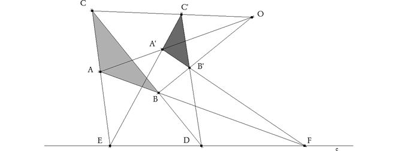

Problema 315 de investigación. Propuesto por José Carlos Chavez Sandoval, estudiante peruano de Matemática Pura en la Universidad Nacional Mayor de San Marcos
Dado un triangulo ABC, y una cónica, sea A'B'C' el triangulo polar de ABC con respecto a la conica. Demostrar que ABC y A'B'C' estan en perspectiva.
Yiu, P. (2001). Introduction to the Geometry of the Triangle,version 2.0402, Summer 2001. http://www.math.fau.edu/yiu/Geometry.html Solución de José María Pedret, Ingeniero Naval. Esplugues de Llobregat (Barcelona). (1 de junio de 2006) |
|
SOLUCIÓN |
|
 Llamamos E al punto de intersección de CA con C'A'. Llamamos F al punto de intersección de AB con A'B'. Si llamamos D al punto de intersección de BC con B'C', hay que demostrar que D está sobre EF. Los puntos B y E son conjugados respecto a la cónica, ya que E se encuentra en A'C' que es la polar de B; del mismo modo podemos asegurar que C y F también son conjugados. Así en el cuadrilátero que forman BC, CA, AB y EF, dos pares de vértices opuestos B y E, C y F son conjugados; entonces el tercer par también es conjugado, A y D donde BC encuentra a EF.(1) B'C' la polar de A entonces debe pasar por D (2); así BC y B'C' se encuentran en un punto D sobre EF(c.q.d.). Nota Esta propiedad de los triángulos conjugados respecto a una cónica, aparece abundantemente en la literatura, especialmente donde se estudie la transformación por polares recíprocas. (Lo que hace que la solución que presento no sea original.
(1) Se usa el siguiente teorema debido a HESSE
Si los extremos de cada una de las dos diagonales de un cuadrilátero completo son conjugados respecto a una cónica dada, los extremos de la tercera diagonal también son conjugados respecto a la misma cónica. (2) Dos puntos son conjugados respecto a una cónica si la polar del uno pasa por el otro. |